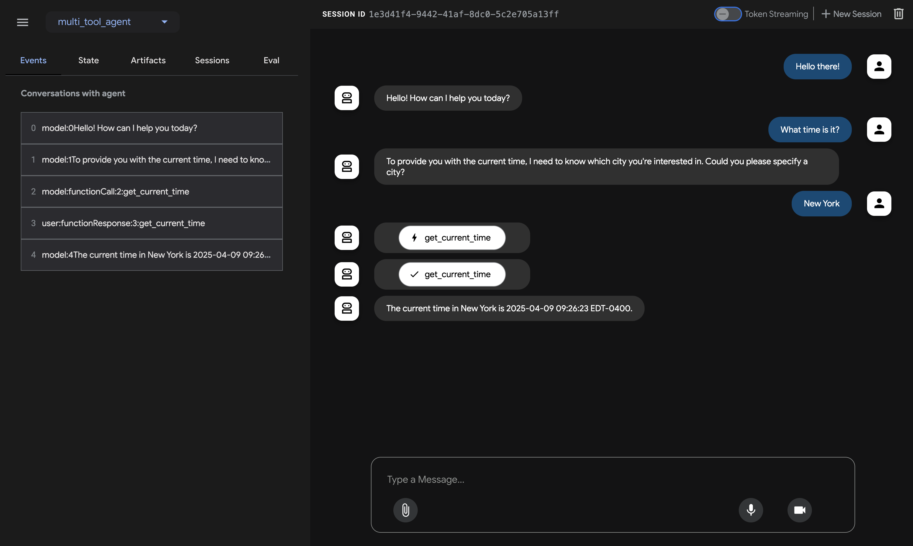

Quickstart (ADK TypeScript)¶
This quickstart guides you through installing the Agent Development Kit (ADK) for TypeScript, setting up a basic agent with multiple tools, and running it locally either in the terminal or in the interactive, browser-based dev UI.
This quickstart assumes a local development environment (VS Code, WebStorm, etc.) with Node.js (v18+ recommended), npm, and terminal access. This method runs the application entirely on your machine and is recommended for development and testing.
1. Create your Project Directory¶
Navigate to the directory where you want to create your project and create a new folder:
Note: Use the prefix
npx adkwhen running ADK commands. This ensures you're using the latest version of the CLI without needing a global installation.
2. Create Your First Agent Project¶
The easiest way to get started is by using the adk create command. This will generate a new agent and set up all the necessary project files if they don't already exist.
Follow the prompts to select a model and provide your API keys. This single command creates a clean, multi-agent-ready project.
Project Structure¶
The adk create command generates a project structure that is efficient and scalable, allowing multiple agents to share a single set of dependencies.
my-adk-project/ # Your parent project folder
├── multi_tool_agent/ # Your agent's code folder
│ ├── agent.ts # Agent definition lives here
│ └── .env # API keys for this agent
├── package.json # SHARED Node.js project manifest
├── tsconfig.json # SHARED TypeScript configuration
└── dist/ # (Created after build) Compiled JavaScript output
Generated TypeScript Configuration (tsconfig.json)¶
The adk create command generates a tsconfig.json file in your project root with recommended settings. You do not need to create this file yourself.
{
"compilerOptions": {
"target": "ES2020",
"module": "Node16", // Required for proper module resolution
"outDir": "./dist",
"rootDir": "./",
"strict": true,
"esModuleInterop": true,
"skipLibCheck": true,
"forceConsistentCasingInFileNames": true,
"moduleResolution": "node16", // Required for subpath imports
"resolveJsonModule": true,
"declaration": true // Optional: generates .d.ts files
},
"include": ["**/*.ts"], // Includes all .ts files in the project
"exclude": ["node_modules", "dist"]
}
Generated Agent Code (agent.ts)¶
The command also creates a feature-rich agent.ts file inside your agent's folder (e.g., multi_tool_agent/). It includes two sample tools (getWeather and getCurrentTime) to give you a strong starting point.
import { LlmAgent as Agent } from 'adk-typescript/agents';
import { LlmRegistry } from 'adk-typescript/models';
import { FunctionTool, ToolContext } from 'adk-typescript/tools';
// --- Tool Functions ---
/**
* Returns current weather information for a specified city
* @param params Object containing city name
* @param context Optional ToolContext
* @returns Promise resolving to weather information or error
*/
async function getWeather(
params: Record<string, any>,
context?: ToolContext
): Promise<{ status: string; report?: string; error_message?: string }> {
const city = params.city;
console.log(`--- Tool: getWeather called for city: ${city} ---`);
const cityNormalized = city.toLowerCase().trim();
const mockWeatherDb: Record<string, { status: string; report: string }> = {
"newyork": {status: "success", report: "The weather in New York is sunny with a temperature of 25°C."},
"london": {status: "success", report: "It's cloudy in London with a temperature of 15°C."},
"tokyo": {status: "success", report: "Tokyo is experiencing light rain and a temperature of 18°C."},
};
if (mockWeatherDb[cityNormalized]) { return mockWeatherDb[cityNormalized]; }
else { return {status: "error", error_message: `Sorry, I don't have weather information for '${city}'.`}; }
}
/**
* Gets the current local time and timezone.
* @param params Empty object (no parameters needed)
* @param context Optional ToolContext
* @returns Promise resolving to time information
*/
async function getCurrentTime(
params: Record<string, any>, // Use Record<string, any> for compatibility with ToolFunction
context?: ToolContext
): Promise<{ currentTime: string; timezone: string; }> {
console.log(`--- Tool: getCurrentTime called ---`);
const now = new Date();
return {
currentTime: now.toLocaleTimeString(),
timezone: Intl.DateTimeFormat().resolvedOptions().timeZone
};
}
// --- Tool Wrappers ---
const getWeatherTool = new FunctionTool({
name: "getWeather",
description: "Returns current weather information for a specified city",
fn: getWeather,
functionDeclaration: {
name: "getWeather",
description: "Returns current weather information for a specified city",
parameters: {
type: 'object',
properties: {
city: { type: 'string', description: 'The name of the city (e.g., "New York")'}
},
required: ['city']
}
}
});
const getCurrentTimeTool = new FunctionTool({
name: "getCurrentTime",
description: "Gets the current local time and timezone.",
fn: getCurrentTime,
functionDeclaration: {
name: "getCurrentTime",
description: "Gets the current local time and timezone.",
parameters: { type: 'object', properties: {} } // No parameters
}
});
// --- Agent Definition ---
// Use LlmRegistry to get a model instance
const agentLlm = LlmRegistry.newLlm("gemini-1.5-flash"); // Or another compatible model
// Export the root agent for ADK tools to find
export const rootAgent = new Agent({
name: "weather_time_agent", // Unique agent name
model: agentLlm, // LLM instance
description: "Provides current weather and time information for cities.",
instruction: "You are a helpful assistant. Use the 'getWeather' tool for weather queries " +
"and the 'getCurrentTime' tool for time queries. Provide clear answers based on tool results. " +
"If asked for weather AND time, use both tools.",
tools: [getWeatherTool, getCurrentTimeTool], // List of available tools
});
3. Set up the model¶
Your agent needs credentials to securely call the LLM service. The npx adk create command prompted you for these and saved them to a .env file located inside your agent's folder (e.g., multi_tool_agent/.env).
You can edit this file at any time.
- Get an API key from Google AI Studio.
-
This content will be in your
multi_tool_agent/.envfile:
- You need an existing Google Cloud account and project.
- Set up a Google Cloud project.
- Set up the gcloud CLI.
- Authenticate to Google Cloud for Application Default Credentials (ADC):
gcloud auth application-default login. - Enable the Vertex AI API.
-
This content will be in your
multi_tool_agent/.envfile:
4. Install, Compile, and Run Your Agent¶
Step 1: Install Dependencies¶
Now that your project files are created, run npm install to download the required packages from your package.json. You only need to do this once.
Step 2: Build Your Agent¶
Compile your TypeScript code into JavaScript using the pre-configured build script.
Run this command whenever you make changes to your .ts files.
Step 3: Run Your Agent¶
You can now interact with your agent using the ADK's CLI tools.
Run the following command to launch the dev UI:
Open the URL provided (usually http://localhost:3000) in your browser and start chatting.


üìù Example prompts to try¶
- What is the weather in New York?
- What is the time in New York?
- What is the weather in Paris?
- What is the time in Paris?
- What time is it in London and what's the weather like?
üéâ Congratulations!¶
You've successfully created and interacted with your first agent using ADK TypeScript!
üõ£Ô∏è Next steps¶
- Add another agent: Run
npx adk create another_agentto add a second agent to your project. Notice how it won't create a newpackage.json. - Go to the tutorial: Learn how to build a multi-agent system, add memory, session state, and safety guardrails: tutorial.
- Understand Core Concepts: Learn about ADK TypeScript Concepts.